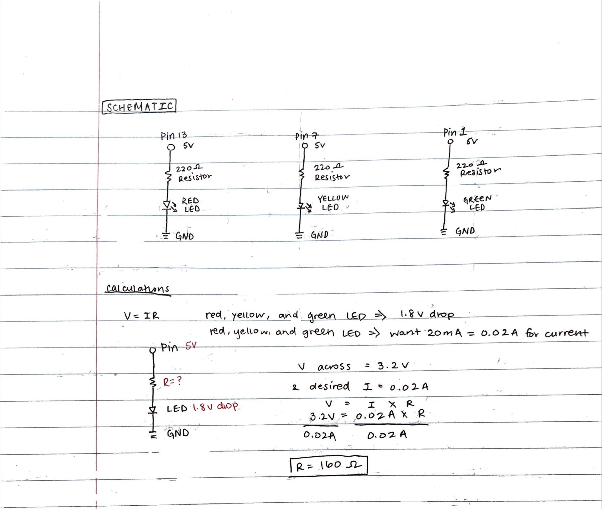
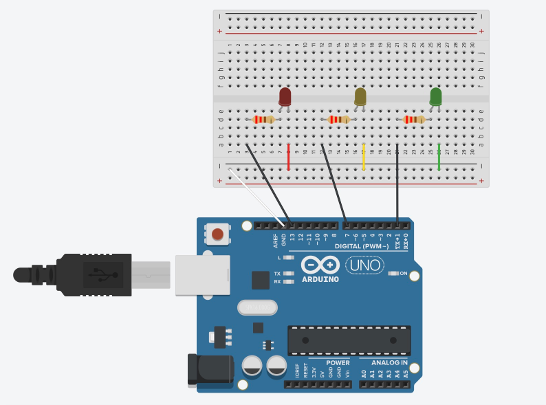
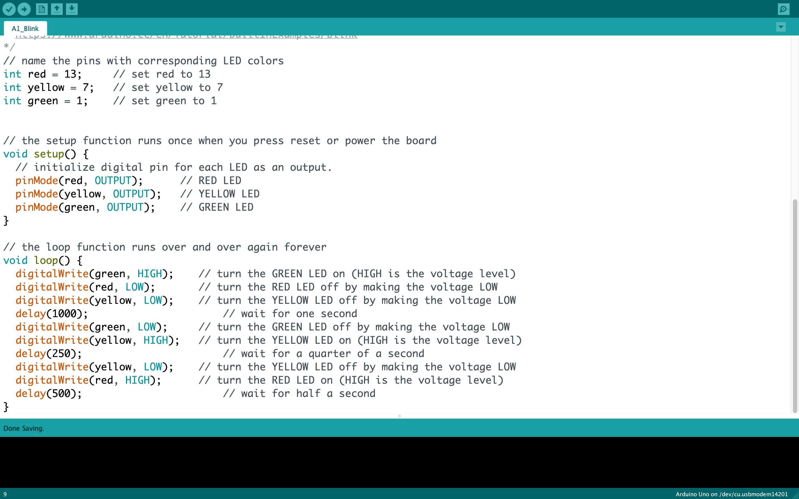

create a schematic for a circuit containing at least 3 LEDs connected to Arduino
implement this circuit using a breadboard
write firmware in Arduino to make the LEDs blink in a pattern
I decided to create a traffic light 🚦 by using red, yellow, and green LEDs.
Here is a gif of my traffic light
circuit in action!
Schematic
 Schematic and calculations
for my circuit.
Since I was using red, yellow, and green LEDs for my circuit, I did one set of calculations to determine what
the appropriate resistance to use for each LED. For red, yellow, and green LEDs, they all have 1.8V drop, and
the desired current for each of the three LEDs was 20mA, or 0.02A(found based on the datasheets for the LEDs). When
calculating the appropriate resistance to be used in the circuit, I started with calculating the voltage across.
Knowing that the Arduino gives 5V, I calculated the voltage across as 3.2V (5V - 1.8V drop = 3.2V across). Using
the known voltage across and the desired current, I then used Ohm's Law with the equation V=IR to get a value
R=160Ω for resistance. To ensure that I did not overload the LEDs and cause them to burn out,
I decided to round up and use a 220Ω resistor (shown in schematic above calculations).
Circuit
For my circuit, to make the traffic light, I used a red LED, yellow LED, and green LED.
Top View of my Circuit
Side View of my Circuit

Here is the circuit, showing the LEDs connected to the Arduino.
Arduino Code
 Arduino code for my circuit.
For my Arduino code, I initialized the pins with their corresponding colors, with Pin13 for the Red LED, Pin7
for the Yellow LED, and Pin1 for the Green LED. I used the loop() function to have the code run over and over
again forever. In this loop, I set the LEDs to alternate from green to yellow to red by turning the
corresponding LEDs on by setting the voltage to HIGH or off by setting the voltage to LOW. View the arduino code
here!
Video of the LEDs lighting up starting from green, then yellow, then red.